Examples for packages/scikit-learn/index.md#
Simple picture of the formal problem of machine learning#
This example generates simple synthetic data points and shows a separating hyperplane on them.
import numpy as np
import matplotlib.pyplot as plt
from sklearn.linear_model import SGDClassifier
from sklearn.datasets import make_blobs
# we create 50 separable synthetic points
X, Y = make_blobs(n_samples=50, centers=2, random_state=0, cluster_std=0.60)
# fit the model
clf = SGDClassifier(loss="hinge", alpha=0.01, fit_intercept=True)
clf.fit(X, Y)
SGDClassifier(alpha=0.01)In a Jupyter environment, please rerun this cell to show the HTML representation or trust the notebook.
On GitHub, the HTML representation is unable to render, please try loading this page with nbviewer.org.
Parameters
# plot the line, the points, and the nearest vectors to the plane
xx = np.linspace(-1, 5, 10)
yy = np.linspace(-1, 5, 10)
X1, X2 = np.meshgrid(xx, yy)
Z = np.empty(X1.shape)
for (i, j), val in np.ndenumerate(X1):
x1 = val
x2 = X2[i, j]
p = clf.decision_function([[x1, x2]])
Z[i, j] = p[0]
plt.figure(figsize=(4, 3))
ax = plt.axes()
ax.contour(
X1, X2, Z, [-1.0, 0.0, 1.0], colors="k", linestyles=["dashed", "solid", "dashed"]
)
ax.scatter(X[:, 0], X[:, 1], c=Y, cmap="Paired")
ax.axis("tight")
(np.float64(-1.0),
np.float64(5.0),
np.float64(-1.0),
np.float64(5.797965192816837))
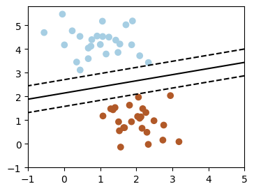
linear_regression#
A simple linear regression
from sklearn.linear_model import LinearRegression
# x from 0 to 30
rng = np.random.default_rng()
x = 30 * rng.random((20, 1))
# y = a*x + b with noise
y = 0.5 * x + 1.0 + rng.normal(size=x.shape)
# create a linear regression model
model = LinearRegression()
model.fit(x, y)
LinearRegression()In a Jupyter environment, please rerun this cell to show the HTML representation or trust the notebook.
On GitHub, the HTML representation is unable to render, please try loading this page with nbviewer.org.
Parameters
# predict y from the data
x_new = np.linspace(0, 30, 100)
y_new = model.predict(x_new[:, np.newaxis])
# plot the results
plt.figure(figsize=(4, 3))
ax = plt.axes()
ax.scatter(x, y)
ax.plot(x_new, y_new)
ax.set_xlabel("x")
ax.set_ylabel("y")
ax.axis("tight")
(np.float64(-1.5),
np.float64(31.5),
np.float64(-0.2674410221257352),
np.float64(16.493036187793326))
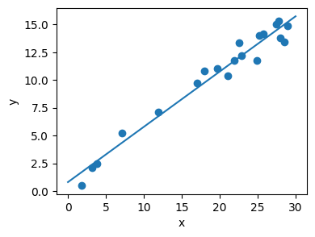
Plot 2D views of the iris dataset#
Plot a simple scatter plot of 2 features of the iris dataset.
Note that more elaborate visualization of this dataset is detailed in the Statistics in Python chapter.
# Load the data
from sklearn.datasets import load_iris
iris = load_iris()
from matplotlib import ticker
# The indices of the features that we are plotting
x_index = 0
y_index = 1
# this formatter will label the colorbar with the correct target names
formatter = ticker.FuncFormatter(lambda i, *args: iris.target_names[int(i)])
plt.figure(figsize=(5, 4))
plt.scatter(iris.data[:, x_index], iris.data[:, y_index], c=iris.target)
plt.colorbar(ticks=[0, 1, 2], format=formatter)
plt.xlabel(iris.feature_names[x_index])
plt.ylabel(iris.feature_names[y_index])
plt.tight_layout()

Nearest-neighbor prediction on iris#
Plot the decision boundary of nearest neighbor decision on iris, first with a single nearest neighbor, and then using 3 nearest neighbors.
from sklearn import neighbors, datasets
from matplotlib.colors import ListedColormap
# Create color maps for 3-class classification problem, as with iris
cmap_light = ListedColormap(["#FFAAAA", "#AAFFAA", "#AAAAFF"])
cmap_bold = ListedColormap(["#FF0000", "#00FF00", "#0000FF"])
iris = datasets.load_iris()
X = iris.data[:, :2] # we only take the first two features. We could
# avoid this ugly slicing by using a two-dim dataset
y = iris.target
knn = neighbors.KNeighborsClassifier(n_neighbors=1)
knn.fit(X, y)
KNeighborsClassifier(n_neighbors=1)In a Jupyter environment, please rerun this cell to show the HTML representation or trust the notebook.
On GitHub, the HTML representation is unable to render, please try loading this page with nbviewer.org.
Parameters
x_min, x_max = X[:, 0].min() - 0.1, X[:, 0].max() + 0.1
y_min, y_max = X[:, 1].min() - 0.1, X[:, 1].max() + 0.1
xx, yy = np.meshgrid(np.linspace(x_min, x_max, 100), np.linspace(y_min, y_max, 100))
Z = knn.predict(np.c_[xx.ravel(), yy.ravel()])
# Put the result into a color plot
Z = Z.reshape(xx.shape)
plt.figure()
plt.pcolormesh(xx, yy, Z, cmap=cmap_light)
<matplotlib.collections.QuadMesh at 0x7fca19dac740>
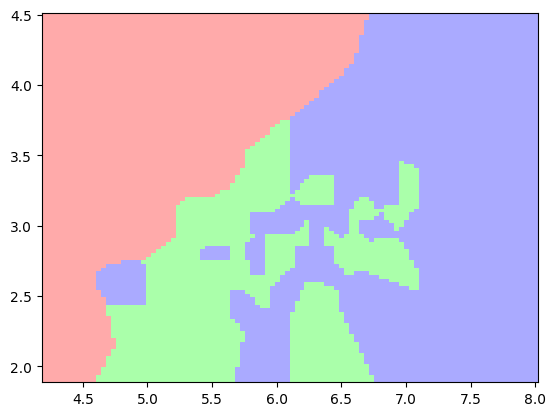
# Plot also the training points
plt.scatter(X[:, 0], X[:, 1], c=y, cmap=cmap_bold)
plt.xlabel("sepal length (cm)")
plt.ylabel("sepal width (cm)")
plt.axis("tight")
(np.float64(4.12),
np.float64(8.08),
np.float64(1.88),
np.float64(4.5200000000000005))
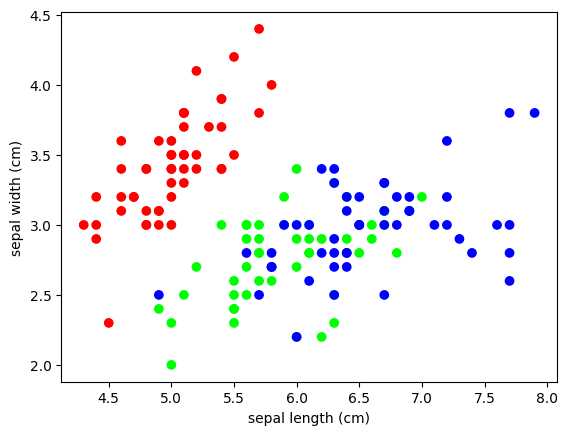
# And now, redo the analysis with 3 neighbors
knn = neighbors.KNeighborsClassifier(n_neighbors=3)
knn.fit(X, y)
KNeighborsClassifier(n_neighbors=3)In a Jupyter environment, please rerun this cell to show the HTML representation or trust the notebook.
On GitHub, the HTML representation is unable to render, please try loading this page with nbviewer.org.
Parameters
Z = knn.predict(np.c_[xx.ravel(), yy.ravel()])
# Put the result into a color plot
Z = Z.reshape(xx.shape)
plt.figure()
plt.pcolormesh(xx, yy, Z, cmap=cmap_light)
<matplotlib.collections.QuadMesh at 0x7fca19bd8800>
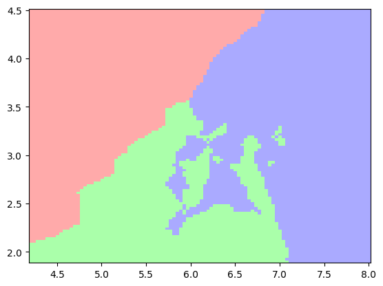
# Plot also the training points
plt.scatter(X[:, 0], X[:, 1], c=y, cmap=cmap_bold)
plt.xlabel("sepal length (cm)")
plt.ylabel("sepal width (cm)")
plt.axis("tight")
(np.float64(4.12),
np.float64(8.08),
np.float64(1.88),
np.float64(4.5200000000000005))
Plot fitting a 9th order polynomial#
Fits data generated from a 9th order polynomial with model of 4th order and 9th order polynomials, to demonstrate that often simpler models are to be preferred
from matplotlib.colors import ListedColormap
from sklearn import linear_model
# Create color maps for 3-class classification problem, as with iris
cmap_light = ListedColormap(["#FFAAAA", "#AAFFAA", "#AAAAFF"])
cmap_bold = ListedColormap(["#FF0000", "#00FF00", "#0000FF"])
rng = np.random.default_rng(27446968)
x = 2 * rng.random(100) - 1
f = lambda t: 1.2 * t**2 + 0.1 * t**3 - 0.4 * t**5 - 0.5 * t**9
y = f(x) + 0.4 * rng.normal(size=100)
x_test = np.linspace(-1, 1, 100)
# The data
plt.figure(figsize=(6, 4))
plt.scatter(x, y, s=4)
<matplotlib.collections.PathCollection at 0x7fca19dad9a0>

# Fitting 4th and 9th order polynomials
#
# For this we need to engineer features: the n_th powers of x:
plt.figure(figsize=(6, 4))
plt.scatter(x, y, s=4)
X = np.array([x**i for i in range(5)]).T
X_test = np.array([x_test**i for i in range(5)]).T
regr = linear_model.LinearRegression()
regr.fit(X, y)
plt.plot(x_test, regr.predict(X_test), label="4th order")
X = np.array([x**i for i in range(10)]).T
X_test = np.array([x_test**i for i in range(10)]).T
regr = linear_model.LinearRegression()
regr.fit(X, y)
plt.plot(x_test, regr.predict(X_test), label="9th order")
plt.legend(loc="best")
plt.axis("tight")
plt.title("Fitting a 4th and a 9th order polynomial")
Text(0.5, 1.0, 'Fitting a 4th and a 9th order polynomial')

# Ground truth
plt.figure(figsize=(6, 4))
plt.scatter(x, y, s=4)
plt.plot(x_test, f(x_test), label="truth")
plt.axis("tight")
plt.title("Ground truth (9th order polynomial)")
Text(0.5, 1.0, 'Ground truth (9th order polynomial)')

Simple visualization and classification of the digits dataset#
Plot the first few samples of the digits dataset and a 2D representation built using PCA, then do a simple classification
from sklearn.datasets import load_digits
digits = load_digits()
# Plot the data: images of digits
# -------------------------------
#
# Each data in a 8x8 image
fig = plt.figure(figsize=(6, 6)) # figure size in inches
fig.subplots_adjust(left=0, right=1, bottom=0, top=1, hspace=0.05, wspace=0.05)
for i in range(64):
ax = fig.add_subplot(8, 8, i + 1, xticks=[], yticks=[])
ax.imshow(digits.images[i], cmap="binary", interpolation="nearest")
# label the image with the target value
ax.text(0, 7, str(digits.target[i]))

Plot a projection on the 2 first principal axis
from sklearn.decomposition import PCA
plt.figure()
pca = PCA(n_components=2)
proj = pca.fit_transform(digits.data)
plt.scatter(proj[:, 0], proj[:, 1], c=digits.target, cmap="Paired")
plt.colorbar()
<matplotlib.colorbar.Colorbar at 0x7fca16deccb0>

Classify with Gaussian naive Bayes
from sklearn.naive_bayes import GaussianNB
from sklearn.model_selection import train_test_split
# split the data into training and validation sets
X_train, X_test, y_train, y_test = train_test_split(digits.data, digits.target)
# train the model
clf = GaussianNB()
clf.fit(X_train, y_train)
GaussianNB()In a Jupyter environment, please rerun this cell to show the HTML representation or trust the notebook.
On GitHub, the HTML representation is unable to render, please try loading this page with nbviewer.org.
Parameters
# use the model to predict the labels of the test data
predicted = clf.predict(X_test)
expected = y_test
# Plot the prediction
fig = plt.figure(figsize=(6, 6)) # figure size in inches
fig.subplots_adjust(left=0, right=1, bottom=0, top=1, hspace=0.05, wspace=0.05)
<Figure size 600x600 with 0 Axes>
# plot the digits: each image is 8x8 pixels
for i in range(64):
ax = fig.add_subplot(8, 8, i + 1, xticks=[], yticks=[])
ax.imshow(X_test.reshape(-1, 8, 8)[i], cmap="binary", interpolation="nearest")
# label the image with the target value
if predicted[i] == expected[i]:
ax.text(0, 7, str(predicted[i]), color="green")
else:
ax.text(0, 7, str(predicted[i]), color="red")
# Quantify the performance
# ------------------------
#
# First print the number of correct matches
matches = predicted == expected
print(matches.sum())
# The total number of data points
print(len(matches))
# And now, the ratio of correct predictions
matches.sum() / float(len(matches))
374
450
np.float64(0.8311111111111111)
# Print the classification report
from sklearn import metrics
print(metrics.classification_report(expected, predicted))
precision recall f1-score support
0 0.98 1.00 0.99 50
1 0.61 0.91 0.73 34
2 0.88 0.85 0.86 41
3 0.85 0.76 0.80 46
4 0.94 0.65 0.77 51
5 0.95 0.87 0.91 45
6 0.98 1.00 0.99 41
7 0.67 0.97 0.79 58
8 0.77 0.71 0.74 42
9 0.89 0.57 0.70 42
accuracy 0.83 450
macro avg 0.85 0.83 0.83 450
weighted avg 0.85 0.83 0.83 450
# Print the confusion matrix
print(metrics.confusion_matrix(expected, predicted))
[[50 0 0 0 0 0 0 0 0 0]
[ 0 31 0 0 0 0 0 2 1 0]
[ 0 4 35 0 1 0 0 0 1 0]
[ 0 1 3 35 0 2 0 1 3 1]
[ 1 2 0 0 33 0 1 14 0 0]
[ 0 1 0 1 0 39 0 3 0 1]
[ 0 0 0 0 0 0 41 0 0 0]
[ 0 0 0 0 1 0 0 56 0 1]
[ 0 9 1 1 0 0 0 1 30 0]
[ 0 3 1 4 0 0 0 6 4 24]]
A simple regression analysis on the California housing data#
Here we perform a simple regression analysis on the California housing data, exploring two types of regressors.
from sklearn.datasets import fetch_california_housing
data = fetch_california_housing(as_frame=True)
# Print a histogram of the quantity to predict: price
plt.figure(figsize=(4, 3))
plt.hist(data.target)
plt.xlabel("price ($100k)")
plt.ylabel("count")
plt.tight_layout()

Print the joint histogram for each feature
for index, feature_name in enumerate(data.feature_names):
plt.figure(figsize=(4, 3))
plt.scatter(data.data[feature_name], data.target)
plt.ylabel("Price", size=15)
plt.xlabel(feature_name, size=15)
plt.tight_layout()
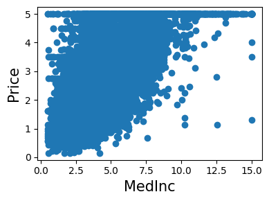
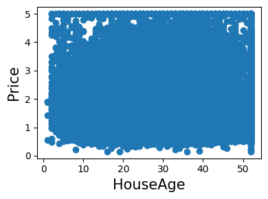
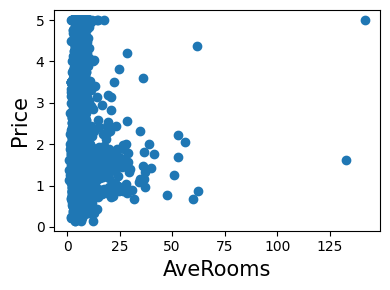
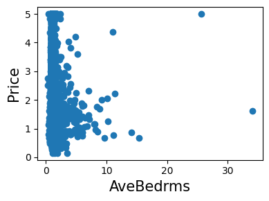
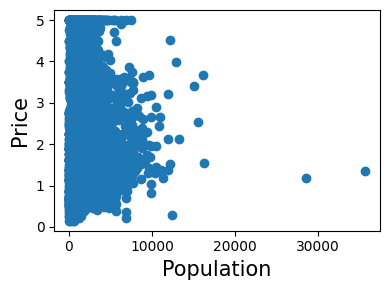
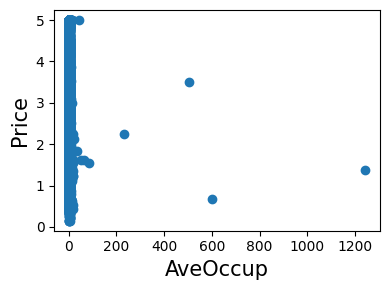
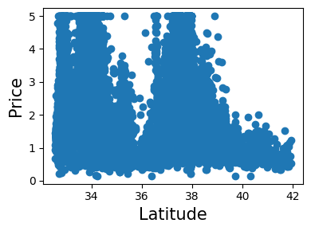
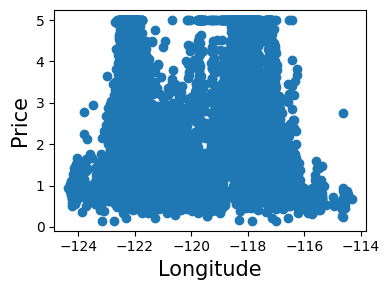
Simple prediction#
from sklearn.model_selection import train_test_split
X_train, X_test, y_train, y_test = train_test_split(data.data, data.target)
from sklearn.linear_model import LinearRegression
clf = LinearRegression()
clf.fit(X_train, y_train)
predicted = clf.predict(X_test)
expected = y_test
plt.figure(figsize=(4, 3))
plt.scatter(expected, predicted)
plt.plot([0, 8], [0, 8], "--k")
plt.axis("tight")
plt.xlabel("True price ($100k)")
plt.ylabel("Predicted price ($100k)")
plt.tight_layout()
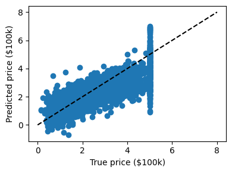
Prediction with gradient boosted tree
from sklearn.ensemble import GradientBoostingRegressor
clf = GradientBoostingRegressor()
clf.fit(X_train, y_train)
GradientBoostingRegressor()In a Jupyter environment, please rerun this cell to show the HTML representation or trust the notebook.
On GitHub, the HTML representation is unable to render, please try loading this page with nbviewer.org.
Parameters
predicted = clf.predict(X_test)
expected = y_test
plt.figure(figsize=(4, 3))
plt.scatter(expected, predicted)
plt.plot([0, 5], [0, 5], "--k")
plt.axis("tight")
plt.xlabel("True price ($100k)")
plt.ylabel("Predicted price ($100k)")
plt.tight_layout()
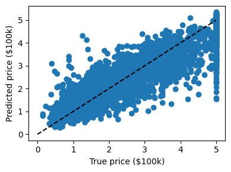
# Print the error rate
print(f"RMS: {np.sqrt(np.mean((predicted - expected) ** 2))!r} ")
RMS: np.float64(0.524536685897191)
Measuring Decision Tree performance#
Demonstrates overfit when testing on train set.
Get the data
from sklearn.datasets import fetch_california_housing
data = fetch_california_housing(as_frame=True)
# Train and test a model
from sklearn.tree import DecisionTreeRegressor
clf = DecisionTreeRegressor().fit(data.data, data.target)
predicted = clf.predict(data.data)
expected = data.target
Plot predicted as a function of expected
plt.figure(figsize=(4, 3))
plt.scatter(expected, predicted)
plt.plot([0, 5], [0, 5], "--k")
plt.axis("tight")
plt.xlabel("True price ($100k)")
plt.ylabel("Predicted price ($100k)")
plt.tight_layout()

Pretty much no errors!
This is too good to be true: we are testing the model on the train data, which is not a measure of generalization.
The results are not valid
linear_model_cv#
Use the RidgeCV and LassoCV to set the regularization parameter
# Load the diabetes dataset
from sklearn.datasets import load_diabetes
data = load_diabetes()
X, y = data.data, data.target
print(X.shape)
(442, 10)
# Compute the cross-validation score with the default hyper-parameters
from sklearn.model_selection import cross_val_score
from sklearn.linear_model import Ridge, Lasso
for Model in [Ridge, Lasso]:
model = Model()
print(f"{Model.__name__}: {cross_val_score(model, X, y).mean()}")
Ridge: 0.410174971340889
Lasso: 0.3375593674654275
# We compute the cross-validation score as a function of alpha, the
# strength of the regularization for Lasso and Ridge
alphas = np.logspace(-3, -1, 30)
plt.figure(figsize=(5, 3))
<Figure size 500x300 with 0 Axes>
<Figure size 500x300 with 0 Axes>
for Model in [Lasso, Ridge]:
scores = [cross_val_score(Model(alpha), X, y, cv=3).mean() for alpha in alphas]
plt.plot(alphas, scores, label=Model.__name__)
plt.legend(loc="lower left")
plt.xlabel("alpha")
plt.ylabel("cross validation score")
plt.tight_layout()
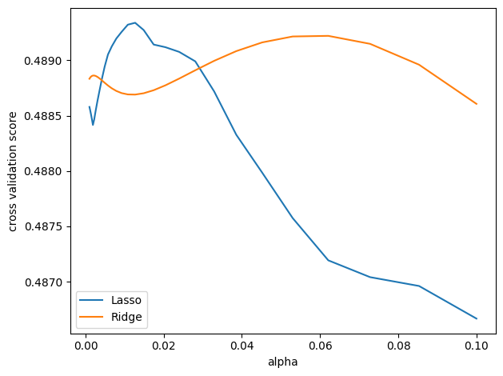
pca#
Demo PCA in 2D
# Load the iris data
from sklearn import datasets
iris = datasets.load_iris()
X = iris.data
y = iris.target
# Fit a PCA
from sklearn.decomposition import PCA
pca = PCA(n_components=2, whiten=True)
pca.fit(X)
PCA(n_components=2, whiten=True)In a Jupyter environment, please rerun this cell to show the HTML representation or trust the notebook.
On GitHub, the HTML representation is unable to render, please try loading this page with nbviewer.org.
Parameters
# Project the data in 2D
X_pca = pca.transform(X)
# Visualize the data
target_ids = range(len(iris.target_names))
<matplotlib.legend.Legend at 0x7fca147106e0>

tSNE to visualize digits#
Here we use sklearn.manifold.TSNE to visualize the digits
datasets. Indeed, the digits are vectors in a 8*8 = 64 dimensional space.
We want to project them in 2D for visualization. tSNE is often a good
solution, as it groups and separates data points based on their local
relationship.
# Load the iris data
from sklearn import datasets
digits = datasets.load_digits()
# Take the first 500 data points: it's hard to see 1500 points
X = digits.data[:500]
y = digits.target[:500]
# Fit and transform with a TSNE
from sklearn.manifold import TSNE
tsne = TSNE(n_components=2, random_state=0)
# Project the data in 2D
X_2d = tsne.fit_transform(X)
# Visualize the data
target_ids = range(len(digits.target_names))
plt.figure(figsize=(6, 5))
colors = "r", "g", "b", "c", "m", "y", "k", "w", "orange", "purple"
for i, c, label in zip(target_ids, colors, digits.target_names, strict=True):
plt.scatter(X_2d[y == i, 0], X_2d[y == i, 1], c=c, label=label)
plt.legend()
<matplotlib.legend.Legend at 0x7fca172600e0>

Bias and variance of polynomial fit#
Demo overfitting, underfitting, and validation and learning curves with polynomial regression.
Fit polynomes of different degrees to a dataset: for too small a degree, the model underfits, while for too large a degree, it overfits.
def generating_func(x, rng=None, error=0.5):
rng = np.random.default_rng(rng)
return rng.normal(10 - 1.0 / (x + 0.1), error)
# A polynomial regression
from sklearn.pipeline import make_pipeline
from sklearn.linear_model import LinearRegression
from sklearn.preprocessing import PolynomialFeatures
A simple figure to illustrate the problem
n_samples = 8
rng = np.random.default_rng(27446968)
x = 10 ** np.linspace(-2, 0, n_samples)
y = generating_func(x, rng=rng)
x_test = np.linspace(-0.2, 1.2, 1000)
titles = ["d = 1 (under-fit; high bias)", "d = 2", "d = 6 (over-fit; high variance)"]
degrees = [1, 2, 6]
fig = plt.figure(figsize=(9, 3.5))
fig.subplots_adjust(left=0.06, right=0.98, bottom=0.15, top=0.85, wspace=0.05)
<Figure size 900x350 with 0 Axes>
for i, d in enumerate(degrees):
ax = fig.add_subplot(131 + i, xticks=[], yticks=[])
ax.scatter(x, y, marker="x", c="k", s=50)
model = make_pipeline(PolynomialFeatures(d), LinearRegression())
model.fit(x[:, np.newaxis], y)
ax.plot(x_test, model.predict(x_test[:, np.newaxis]), "-b")
ax.set_xlim(-0.2, 1.2)
ax.set_ylim(0, 12)
ax.set_xlabel("house size")
if i == 0:
ax.set_ylabel("price")
ax.set_title(titles[i])
# Generate a larger dataset
from sklearn.model_selection import train_test_split
n_samples = 200
test_size = 0.4
error = 1.0
# randomly sample the data
x = rng.random(n_samples)
y = generating_func(x, rng=rng, error=error)
# split into training, validation, and testing sets.
x_train, x_test, y_train, y_test = train_test_split(x, y, test_size=test_size)
# show the training and validation sets
plt.figure(figsize=(6, 4))
plt.scatter(x_train, y_train, color="red", label="Training set")
plt.scatter(x_test, y_test, color="blue", label="Test set")
plt.title("The data")
plt.legend(loc="best")
<matplotlib.legend.Legend at 0x7fca1448c4a0>
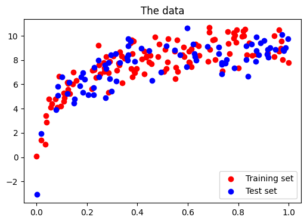
# Plot a validation curve
from sklearn.model_selection import validation_curve
degrees = list(range(1, 21))
model = make_pipeline(PolynomialFeatures(), LinearRegression())
# The parameter to vary is the "degrees" on the pipeline step
# "polynomialfeatures"
train_scores, validation_scores = validation_curve(
model,
x[:, np.newaxis],
y,
param_name="polynomialfeatures__degree",
param_range=degrees,
)
# Plot the mean train error and validation error across folds
plt.figure(figsize=(6, 4))
plt.plot(degrees, validation_scores.mean(axis=1), lw=2, label="cross-validation")
plt.plot(degrees, train_scores.mean(axis=1), lw=2, label="training")
plt.legend(loc="best")
plt.xlabel("degree of fit")
plt.ylabel("explained variance")
plt.title("Validation curve")
plt.tight_layout()
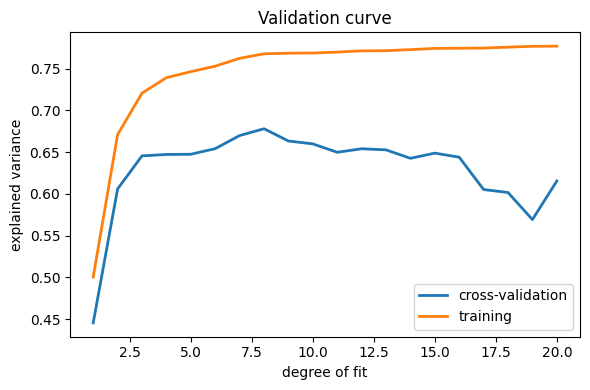
Learning curves#
Plot train and test error with an increasing number of samples
# A learning curve for d=1, 5, 15
for d in [1, 5, 15]:
model = make_pipeline(PolynomialFeatures(degree=d), LinearRegression())
from sklearn.model_selection import learning_curve
train_sizes, train_scores, validation_scores = learning_curve(
model, x[:, np.newaxis], y, train_sizes=np.logspace(-1, 0, 20)
)
# Plot the mean train error and validation error across folds
plt.figure(figsize=(6, 4))
plt.plot(
train_sizes, validation_scores.mean(axis=1), lw=2, label="cross-validation"
)
plt.plot(train_sizes, train_scores.mean(axis=1), lw=2, label="training")
plt.ylim(ymin=-0.1, ymax=1)
plt.legend(loc="best")
plt.xlabel("number of train samples")
plt.ylabel("explained variance")
plt.title(f"Learning curve (degree={d})")
plt.tight_layout()
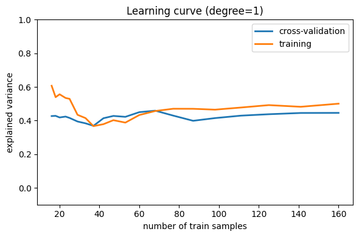
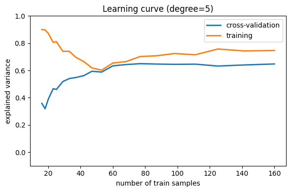
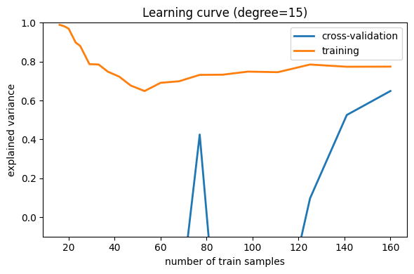
Other examples#
Tutorial Diagrams#
This script plots the flow-charts used in the scikit-learn tutorials.
from matplotlib.patches import Circle, Rectangle, Polygon, Arrow, FancyArrow
def create_base(box_bg="#CCCCCC", arrow1="#88CCFF", arrow2="#88FF88", supervised=True):
fig = plt.figure(figsize=(9, 6), facecolor="w")
ax = plt.axes((0, 0, 1, 1), xticks=[], yticks=[], frameon=False)
ax.set_xlim(0, 9)
ax.set_ylim(0, 6)
patches = [
Rectangle((0.3, 3.6), 1.5, 1.8, zorder=1, fc=box_bg),
Rectangle((0.5, 3.8), 1.5, 1.8, zorder=2, fc=box_bg),
Rectangle((0.7, 4.0), 1.5, 1.8, zorder=3, fc=box_bg),
Rectangle((2.9, 3.6), 0.2, 1.8, fc=box_bg),
Rectangle((3.1, 3.8), 0.2, 1.8, fc=box_bg),
Rectangle((3.3, 4.0), 0.2, 1.8, fc=box_bg),
Rectangle((0.3, 0.2), 1.5, 1.8, fc=box_bg),
Rectangle((2.9, 0.2), 0.2, 1.8, fc=box_bg),
Circle((5.5, 3.5), 1.0, fc=box_bg),
Polygon([[5.5, 1.7], [6.1, 1.1], [5.5, 0.5], [4.9, 1.1]], fc=box_bg),
FancyArrow(
2.3, 4.6, 0.35, 0, fc=arrow1, width=0.25, head_width=0.5, head_length=0.2
),
FancyArrow(
3.75, 4.2, 0.5, -0.2, fc=arrow1, width=0.25, head_width=0.5, head_length=0.2
),
FancyArrow(
5.5, 2.4, 0, -0.4, fc=arrow1, width=0.25, head_width=0.5, head_length=0.2
),
FancyArrow(
2.0, 1.1, 0.5, 0, fc=arrow2, width=0.25, head_width=0.5, head_length=0.2
),
FancyArrow(
3.3, 1.1, 1.3, 0, fc=arrow2, width=0.25, head_width=0.5, head_length=0.2
),
FancyArrow(
6.2, 1.1, 0.8, 0, fc=arrow2, width=0.25, head_width=0.5, head_length=0.2
),
]
if supervised:
patches += [
Rectangle((0.3, 2.4), 1.5, 0.5, zorder=1, fc=box_bg),
Rectangle((0.5, 2.6), 1.5, 0.5, zorder=2, fc=box_bg),
Rectangle((0.7, 2.8), 1.5, 0.5, zorder=3, fc=box_bg),
FancyArrow(
2.3, 2.9, 2.0, 0, fc=arrow1, width=0.25, head_width=0.5, head_length=0.2
),
Rectangle((7.3, 0.85), 1.5, 0.5, fc=box_bg),
]
else:
patches += [Rectangle((7.3, 0.2), 1.5, 1.8, fc=box_bg)]
for p in patches:
ax.add_patch(p)
plt.text(
1.45,
4.9,
"Training\nText,\nDocuments,\nImages,\netc.",
ha="center",
va="center",
fontsize=14,
)
plt.text(3.6, 4.9, "Feature\nVectors", ha="left", va="center", fontsize=14)
plt.text(
5.5, 3.5, "Machine\nLearning\nAlgorithm", ha="center", va="center", fontsize=14
)
plt.text(
1.05,
1.1,
"New Text,\nDocument,\nImage,\netc.",
ha="center",
va="center",
fontsize=14,
)
plt.text(3.3, 1.7, "Feature\nVector", ha="left", va="center", fontsize=14)
plt.text(5.5, 1.1, "Predictive\nModel", ha="center", va="center", fontsize=12)
if supervised:
plt.text(1.45, 3.05, "Labels", ha="center", va="center", fontsize=14)
plt.text(8.05, 1.1, "Expected\nLabel", ha="center", va="center", fontsize=14)
plt.text(
8.8, 5.8, "Supervised Learning Model", ha="right", va="top", fontsize=18
)
else:
plt.text(
8.05,
1.1,
"Likelihood\nor Cluster ID\nor Better\nRepresentation",
ha="center",
va="center",
fontsize=12,
)
plt.text(
8.8, 5.8, "Unsupervised Learning Model", ha="right", va="top", fontsize=18
)
def plot_supervised_chart(annotate=False):
create_base(supervised=True)
if annotate:
fontdict = {"color": "r", "weight": "bold", "size": 14}
plt.text(
1.9,
4.55,
"X = vec.fit_transform(input)",
fontdict=fontdict,
rotation=20,
ha="left",
va="bottom",
)
plt.text(
3.7,
3.2,
"clf.fit(X, y)",
fontdict=fontdict,
rotation=20,
ha="left",
va="bottom",
)
plt.text(
1.7,
1.5,
"X_new = vec.transform(input)",
fontdict=fontdict,
rotation=20,
ha="left",
va="bottom",
)
plt.text(
6.1,
1.5,
"y_new = clf.predict(X_new)",
fontdict=fontdict,
rotation=20,
ha="left",
va="bottom",
)
def plot_unsupervised_chart():
create_base(supervised=False)
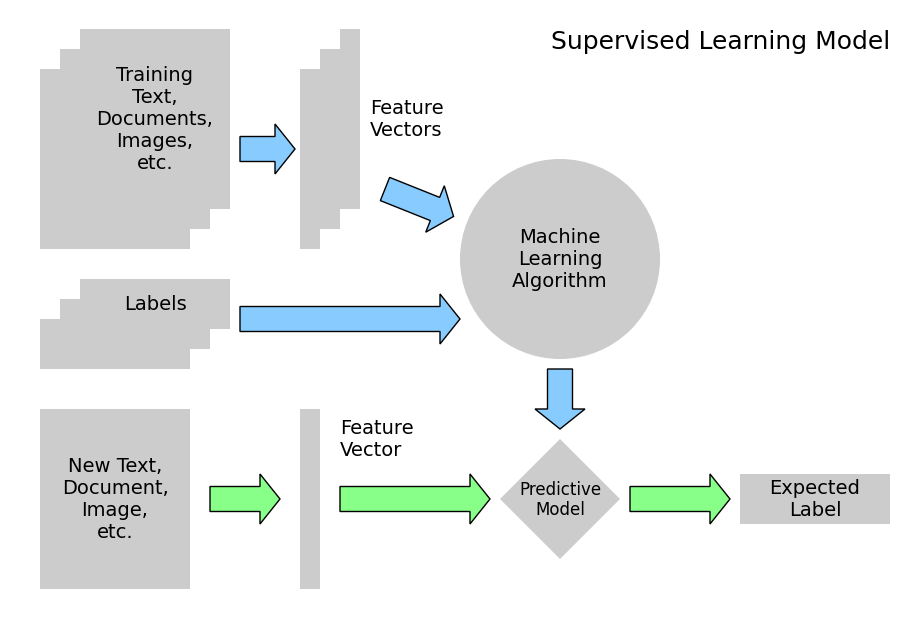
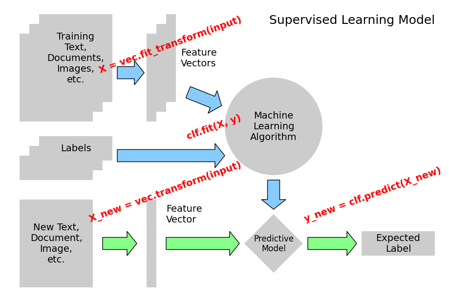
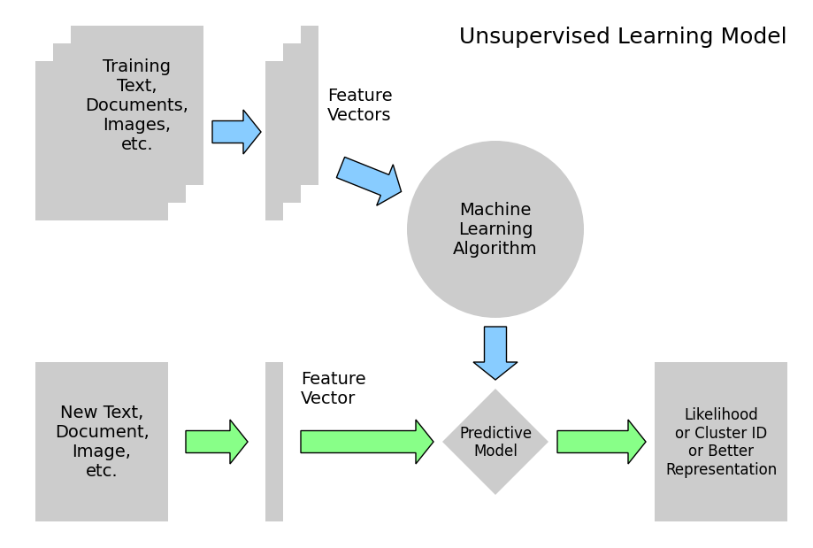
Compare classifiers on the digits data#
Compare the performance of a variety of classifiers on a test set for the digits data.
from sklearn import model_selection, datasets, metrics
from sklearn.svm import LinearSVC
from sklearn.naive_bayes import GaussianNB
from sklearn.neighbors import KNeighborsClassifier
digits = datasets.load_digits()
X = digits.data
y = digits.target
X_train, X_test, y_train, y_test = model_selection.train_test_split(
X, y, test_size=0.25, random_state=0
)
for Model in [LinearSVC, GaussianNB, KNeighborsClassifier]:
clf = Model().fit(X_train, y_train)
y_pred = clf.predict(X_test)
print(f"{Model.__name__}: {metrics.f1_score(y_test, y_pred, average='macro')}")
LinearSVC: 0.9365582188220227
GaussianNB: 0.8332741681010102
KNeighborsClassifier: 0.9804562804949924
print("------------------")
------------------
# test SVC loss
for loss in ["hinge", "squared_hinge"]:
clf = LinearSVC(loss=loss).fit(X_train, y_train)
y_pred = clf.predict(X_test)
print(
f"LinearSVC(loss='{loss}'): {metrics.f1_score(y_test, y_pred, average='macro')}"
)
LinearSVC(loss='hinge'): 0.9305231944687865
LinearSVC(loss='squared_hinge'): 0.9365582188220227
/opt/hostedtoolcache/Python/3.12.12/x64/lib/python3.12/site-packages/sklearn/svm/_base.py:1258: ConvergenceWarning: Liblinear failed to converge, increase the number of iterations.
warnings.warn(
print("-------------------")
-------------------
# test the number of neighbors
for n_neighbors in range(1, 11):
clf = KNeighborsClassifier(n_neighbors=n_neighbors).fit(X_train, y_train)
y_pred = clf.predict(X_test)
print(
f"KNeighbors(n_neighbors={n_neighbors}): {metrics.f1_score(y_test, y_pred, average='macro')}"
)
KNeighbors(n_neighbors=1): 0.9913675218842191
KNeighbors(n_neighbors=2): 0.9848442068835102
KNeighbors(n_neighbors=3): 0.9867753449543099
KNeighbors(n_neighbors=4): 0.9803719053818863
KNeighbors(n_neighbors=5): 0.9804562804949924
KNeighbors(n_neighbors=6): 0.9757924194139573
KNeighbors(n_neighbors=7): 0.9780645792142071
KNeighbors(n_neighbors=8): 0.9780645792142071
KNeighbors(n_neighbors=9): 0.9780645792142071
KNeighbors(n_neighbors=10): 0.9755550897728812
The eigenfaces example: chaining PCA and SVMs#
The goal of this example is to show how an unsupervised method and a supervised one can be chained for better prediction. It starts with a didactic but lengthy way of doing things, and finishes with the idiomatic approach to pipelining in scikit-learn.
Here we’ll take a look at a simple facial recognition example. Ideally,
we would use a dataset consisting of a subset of the Labeled Faces in
the Wild data that is available with
sklearn.datasets.fetch_lfw_people(). However, this is a relatively large
download (~200MB) so we will do the tutorial on a simpler, less rich dataset.
Feel free to explore the LFW dataset.
from sklearn import datasets
faces = datasets.fetch_olivetti_faces()
faces.data.shape
downloading Olivetti faces from https://ndownloader.figshare.com/files/5976027 to /home/runner/scikit_learn_data
(400, 4096)
Let’s visualize these faces to see what we’re working with
fig = plt.figure(figsize=(8, 6))
# plot several images
for i in range(15):
ax = fig.add_subplot(3, 5, i + 1, xticks=[], yticks=[])
ax.imshow(faces.images[i], cmap="bone")
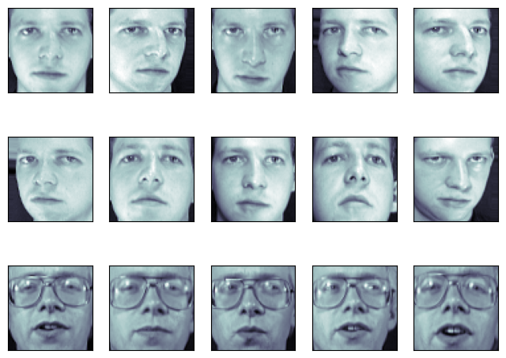
Note
Note that these faces have already been localized and scaled to a common size. This is an important preprocessing piece for facial recognition, and is a process that can require a large collection of training data. This can be done in scikit-learn, but the challenge is gathering a sufficient amount of training data for the algorithm to work. Fortunately, this piece is common enough that it has been done. One good resource is OpenCV — the Open Computer Vision Library.
We’ll perform a Support Vector classification of the images. We’ll do a typical train-test split on the images:
from sklearn.model_selection import train_test_split
X_train, X_test, y_train, y_test = train_test_split(
faces.data, faces.target, random_state=0
)
print(X_train.shape, X_test.shape)
(300, 4096) (100, 4096)
Preprocessing: Principal Component Analysis#
1850 dimensions is a lot for SVM. We can use PCA to reduce these 1850 features to a manageable size, while maintaining most of the information in the dataset.
from sklearn import decomposition
pca = decomposition.PCA(n_components=150, whiten=True)
pca.fit(X_train)
PCA(n_components=150, whiten=True)In a Jupyter environment, please rerun this cell to show the HTML representation or trust the notebook.
On GitHub, the HTML representation is unable to render, please try loading this page with nbviewer.org.
Parameters
One interesting part of PCA is that it computes the “mean” face, which can be interesting to examine:
plt.imshow(pca.mean_.reshape(faces.images[0].shape), cmap="bone")
<matplotlib.image.AxesImage at 0x7fca1422a960>
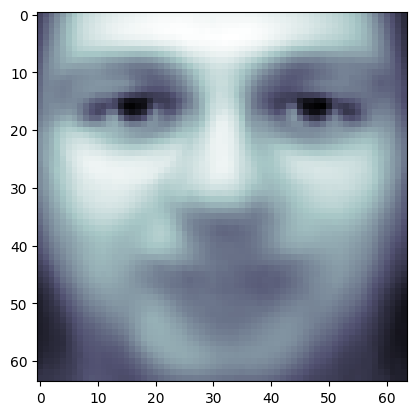
The principal components measure deviations about this mean along orthogonal axes.
print(pca.components_.shape)
(150, 4096)
It is also interesting to visualize these principal components:
fig = plt.figure(figsize=(16, 6))
for i in range(30):
ax = fig.add_subplot(3, 10, i + 1, xticks=[], yticks=[])
ax.imshow(pca.components_[i].reshape(faces.images[0].shape), cmap="bone")
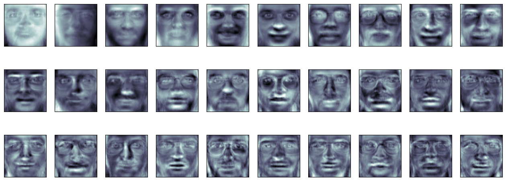
The components (“eigenfaces”) are ordered by their importance from top-left to bottom-right. We see that the first few components seem to primarily take care of lighting conditions; the remaining components pull out certain identifying features: the nose, eyes, eyebrows, etc.
With this projection computed, we can now project our original training and test data onto the PCA basis:
X_train_pca = pca.transform(X_train)
X_test_pca = pca.transform(X_test)
print(X_train_pca.shape)
print(X_test_pca.shape)
(300, 150)
(100, 150)
These projected components correspond to factors in a linear combination of component images such that the combination approaches the original face.
Doing the Learning: Support Vector Machines#
Now we’ll perform support-vector-machine classification on this reduced dataset:
from sklearn import svm
clf = svm.SVC(C=5.0, gamma=0.001)
clf.fit(X_train_pca, y_train)
SVC(C=5.0, gamma=0.001)In a Jupyter environment, please rerun this cell to show the HTML representation or trust the notebook.
On GitHub, the HTML representation is unable to render, please try loading this page with nbviewer.org.
Parameters
Finally, we can evaluate how well this classification did. First, we might plot a few of the test-cases with the labels learned from the training set:
fig = plt.figure(figsize=(8, 6))
for i in range(15):
ax = fig.add_subplot(3, 5, i + 1, xticks=[], yticks=[])
ax.imshow(X_test[i].reshape(faces.images[0].shape), cmap="bone")
y_pred = clf.predict(X_test_pca[i, np.newaxis])[0]
color = "black" if y_pred == y_test[i] else "red"
ax.set_title(y_pred, fontsize="small", color=color)
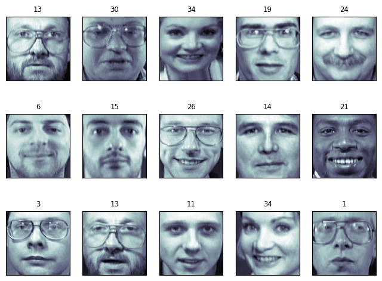
The classifier is correct on an impressive number of images given the simplicity of its learning model! Using a linear classifier on 150 features derived from the pixel-level data, the algorithm correctly identifies a large number of the people in the images.
Again, we can quantify this effectiveness using one of several measures
from sklearn.metrics. First we can do the classification
report, which shows the precision, recall and other measures of the
“goodness” of the classification:
from sklearn import metrics
y_pred = clf.predict(X_test_pca)
print(metrics.classification_report(y_test, y_pred))
precision recall f1-score support
0 1.00 0.50 0.67 6
1 1.00 1.00 1.00 4
2 0.50 1.00 0.67 2
3 1.00 1.00 1.00 1
4 0.33 1.00 0.50 1
5 1.00 1.00 1.00 5
6 1.00 1.00 1.00 4
7 1.00 0.67 0.80 3
9 1.00 1.00 1.00 1
10 1.00 1.00 1.00 4
11 1.00 1.00 1.00 1
12 0.67 1.00 0.80 2
13 1.00 1.00 1.00 3
14 1.00 1.00 1.00 5
15 1.00 1.00 1.00 3
17 1.00 1.00 1.00 6
19 1.00 1.00 1.00 4
20 1.00 1.00 1.00 1
21 1.00 1.00 1.00 1
22 1.00 1.00 1.00 2
23 1.00 1.00 1.00 1
24 1.00 1.00 1.00 2
25 1.00 0.50 0.67 2
26 1.00 0.75 0.86 4
27 1.00 1.00 1.00 1
28 0.67 1.00 0.80 2
29 1.00 1.00 1.00 3
30 1.00 1.00 1.00 4
31 1.00 1.00 1.00 3
32 1.00 1.00 1.00 3
33 1.00 1.00 1.00 2
34 1.00 1.00 1.00 3
35 1.00 1.00 1.00 1
36 1.00 1.00 1.00 3
37 1.00 1.00 1.00 3
38 1.00 1.00 1.00 1
39 1.00 1.00 1.00 3
accuracy 0.94 100
macro avg 0.95 0.96 0.94 100
weighted avg 0.97 0.94 0.94 100
Another interesting metric is the confusion matrix, which indicates how often any two items are mixed-up. The confusion matrix of a perfect classifier would only have nonzero entries on the diagonal, with zeros on the off-diagonal:
print(metrics.confusion_matrix(y_test, y_pred))
[[3 0 0 ... 0 0 0]
[0 4 0 ... 0 0 0]
[0 0 2 ... 0 0 0]
...
[0 0 0 ... 3 0 0]
[0 0 0 ... 0 1 0]
[0 0 0 ... 0 0 3]]
Pipelining#
Above we used PCA as a pre-processing step before applying our support
vector machine classifier. Plugging the output of one estimator directly
into the input of a second estimator is a commonly used pattern; for
this reason scikit-learn provides a Pipeline object which automates
this process. The above problem can be re-expressed as a pipeline as
follows:
from sklearn.pipeline import Pipeline
clf = Pipeline(
[
("pca", decomposition.PCA(n_components=150, whiten=True)),
("svm", svm.LinearSVC(C=1.0)),
]
)
clf.fit(X_train, y_train)
Pipeline(steps=[('pca', PCA(n_components=150, whiten=True)),
('svm', LinearSVC())])In a Jupyter environment, please rerun this cell to show the HTML representation or trust the notebook. On GitHub, the HTML representation is unable to render, please try loading this page with nbviewer.org.
Parameters
Parameters
Parameters
[[4 0 0 ... 0 0 0]
[0 4 0 ... 0 0 0]
[0 0 1 ... 0 0 0]
...
[0 0 0 ... 3 0 0]
[0 0 0 ... 0 1 0]
[0 0 0 ... 0 0 3]]
A Note on Facial Recognition#
Here we have used PCA “eigenfaces” as a pre-processing step for facial recognition. The reason we chose this is because PCA is a broadly-applicable technique, which can be useful for a wide array of data types. Research in the field of facial recognition in particular, however, has shown that other more specific feature extraction methods are can be much more effective.
Example of linear and non-linear models#
This is an example plot from the tutorial which accompanies an explanation of the support vector machine GUI.
from sklearn import svm
rng = np.random.default_rng(27446968)
Data that is linearly separable
def linear_model(rseed=42, n_samples=30):
"Generate data according to a linear model"
np.random.seed(rseed)
data = np.random.normal(0, 10, (n_samples, 2))
data[: n_samples // 2] -= 15
data[n_samples // 2 :] += 15
labels = np.ones(n_samples)
labels[: n_samples // 2] = -1
return data, labels
X, y = linear_model()
clf = svm.SVC(kernel="linear")
clf.fit(X, y)
SVC(kernel='linear')In a Jupyter environment, please rerun this cell to show the HTML representation or trust the notebook.
On GitHub, the HTML representation is unable to render, please try loading this page with nbviewer.org.
Parameters
plt.figure(figsize=(6, 4))
ax = plt.subplot(111, xticks=[], yticks=[])
ax.scatter(X[:, 0], X[:, 1], c=y, cmap="bone")
ax.scatter(
clf.support_vectors_[:, 0],
clf.support_vectors_[:, 1],
s=80,
edgecolors="k",
facecolors="none",
)
delta = 1
y_min, y_max = -50, 50
x_min, x_max = -50, 50
x = np.arange(x_min, x_max + delta, delta)
y = np.arange(y_min, y_max + delta, delta)
X1, X2 = np.meshgrid(x, y)
Z = clf.decision_function(np.c_[X1.ravel(), X2.ravel()])
Z = Z.reshape(X1.shape)
ax.contour(
X1, X2, Z, [-1.0, 0.0, 1.0], colors="k", linestyles=["dashed", "solid", "dashed"]
)
<matplotlib.contour.QuadContourSet at 0x7fca0df506e0>
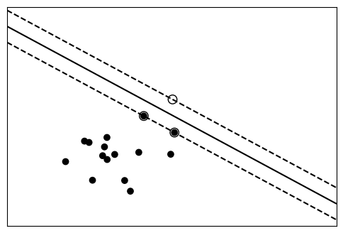
Data with a non-linear separation
def nonlinear_model(rseed=27446968, n_samples=30):
rng = np.random.default_rng(rseed)
radius = 40 * rng.random(n_samples)
far_pts = radius > 20
radius[far_pts] *= 1.2
radius[~far_pts] *= 1.1
theta = rng.random(n_samples) * np.pi * 2
data = np.empty((n_samples, 2))
data[:, 0] = radius * np.cos(theta)
data[:, 1] = radius * np.sin(theta)
labels = np.ones(n_samples)
labels[far_pts] = -1
return data, labels
X, y = nonlinear_model()
clf = svm.SVC(kernel="rbf", gamma=0.001, coef0=0, degree=3)
clf.fit(X, y)
SVC(coef0=0, gamma=0.001)In a Jupyter environment, please rerun this cell to show the HTML representation or trust the notebook.
On GitHub, the HTML representation is unable to render, please try loading this page with nbviewer.org.
Parameters
plt.figure(figsize=(6, 4))
ax = plt.subplot(1, 1, 1, xticks=[], yticks=[])
ax.scatter(X[:, 0], X[:, 1], c=y, cmap="bone", zorder=2)
ax.scatter(
clf.support_vectors_[:, 0],
clf.support_vectors_[:, 1],
s=80,
edgecolors="k",
facecolors="none",
)
delta = 1
y_min, y_max = -50, 50
x_min, x_max = -50, 50
x = np.arange(x_min, x_max + delta, delta)
y = np.arange(y_min, y_max + delta, delta)
X1, X2 = np.meshgrid(x, y)
Z = clf.decision_function(np.c_[X1.ravel(), X2.ravel()])
Z = Z.reshape(X1.shape)
ax.contour(
X1,
X2,
Z,
[-1.0, 0.0, 1.0],
colors="k",
linestyles=["dashed", "solid", "dashed"],
zorder=1,
)
<matplotlib.contour.QuadContourSet at 0x7fca1419dbb0>
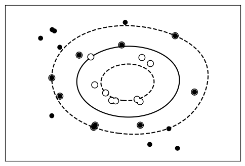
variance_linear_regr#
Plot variance and regularization in linear models
# Smaller figures
plt.rcParams["figure.figsize"] = (3, 2)
# We consider the situation where we have only 2 data point
X = np.c_[0.5, 1].T
y = [0.5, 1]
X_test = np.c_[0, 2].T
# Without noise, as linear regression fits the data perfectly
from sklearn import linear_model
regr = linear_model.LinearRegression()
regr.fit(X, y)
plt.plot(X, y, "o")
plt.plot(X_test, regr.predict(X_test))
[<matplotlib.lines.Line2D at 0x7fca1718dd90>]
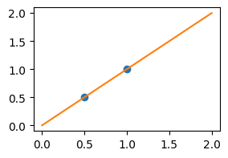
# In real life situation, we have noise (e.g. measurement noise) in our data:
rng = np.random.default_rng(27446968)
for _ in range(6):
noisy_X = X + np.random.normal(loc=0, scale=0.1, size=X.shape)
plt.plot(noisy_X, y, "o")
regr.fit(noisy_X, y)
plt.plot(X_test, regr.predict(X_test))
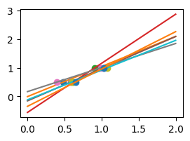
As we can see, our linear model captures and amplifies the noise in the data. It displays a lot of variance.
We can use another linear estimator that uses regularization, the
Ridge estimator. This estimator regularizes the
coefficients by shrinking them to zero, under the assumption that very high
correlations are often spurious. The alpha parameter controls the amount of
shrinkage used.
regr = linear_model.Ridge(alpha=0.1)
np.random.seed(0)
for _ in range(6):
noisy_X = X + np.random.normal(loc=0, scale=0.1, size=X.shape)
plt.plot(noisy_X, y, "o")
regr.fit(noisy_X, y)
plt.plot(X_test, regr.predict(X_test))
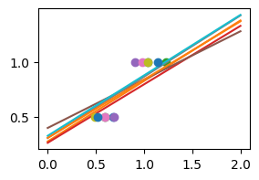